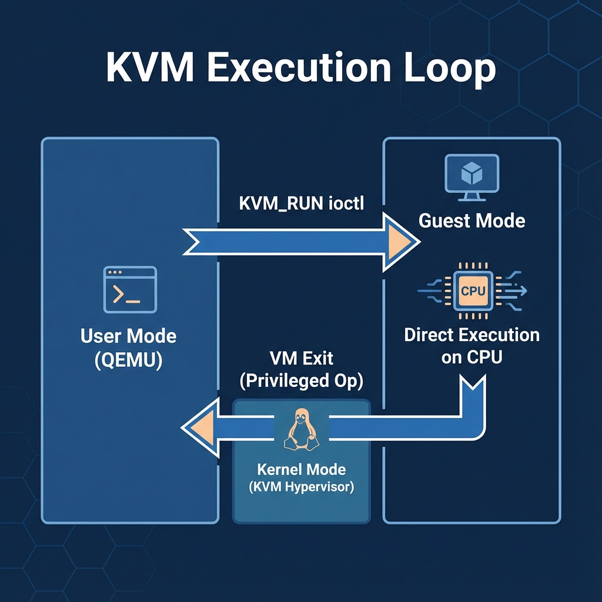
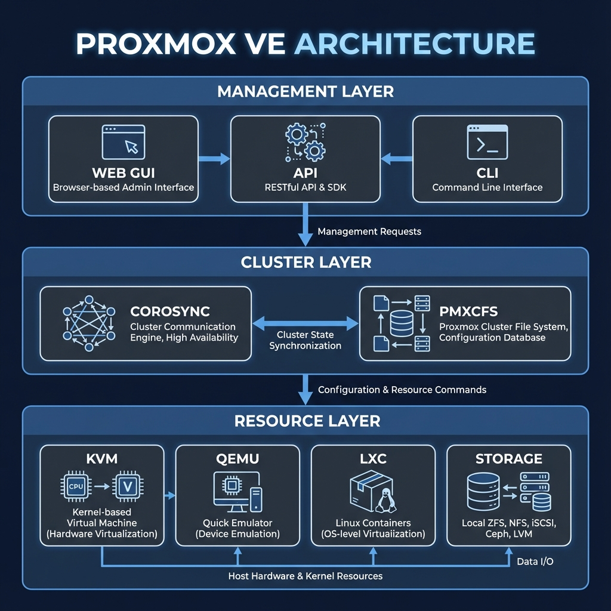
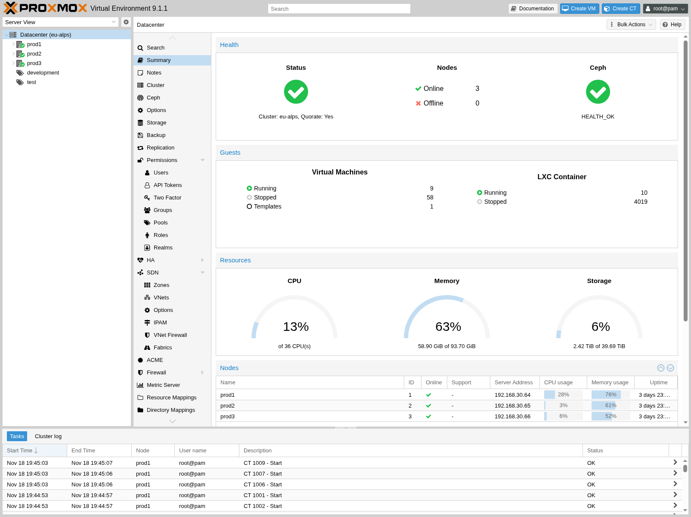
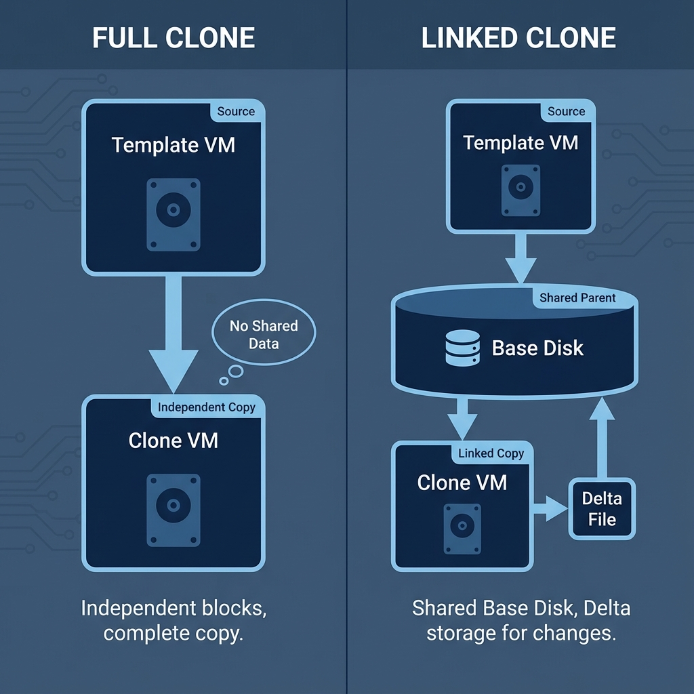

Virtual Machines (VMs)
Student NotesCourse: Computer Systems Engineering Module: Operating Systems 3 (Virtualisation & Cloud Technologies) Topic: Virtual Machines (VMs) Estimated Reading Time: 30 Minutes
[!TIP] How to succeed in this week: VMs are the building blocks of infrastructure. Pay close attention to the lifecycle operations (create, configure, snapshotPoint-in-time copy of VM state for rollback - , cloneAn exact copy of a virtual machine ). These patterns repeat in every cloud platform you'll encounter. Practice the CLICommand Line Interface commands—they're faster than the GUI.
Welcome to Week 2!
Having established the theoretical foundations of virtualizationThe creation of virtual versions of physical computing resources, we now shift our focus to heavy technical implementation. This week is a deep dive into the specific technologies that power modern open-source virtualizationThe creation of virtual versions of physical computing resources: KVMKernel-based Virtual Machine - A Type 1 hypervisor HypervisorSoftware that creates and manages virtual machines" Type 1 hypervisorA bare-metal hypervisor that runs directly on hardware (the engine), QEMUQuick Emulator - Works with KVM for virtualization HypervisorSoftware that creates and manages virtual machines" Type 1 hypervisorA bare-metal hypervisor that runs directly on hardware for virtualizationThe creation of virtual versions of physical computing resources (the emulator), and ProxmoxOpen-source virtualization platform combining KVM and LXC and LXCLinux Containers - OS-level virtualization and LXCLinux Containers - OS-level virtualization platform combining KVMKernel-based Virtual Machine - A Type 1 hypervisor HypervisorSoftware that creates and manages virtual machines" Type 1 hypervisorA bare-metal hypervisor that runs directly on hardware and LXCLinux Containers - OS-level virtualization VE (the platform).
We will deconstruct their compositions, explore their specific functions, and master their configurations. By the end of this week, you will move beyond theory to practice, demonstrating the ability to deploy virtual machines manually using QEMUQuick Emulator - Works with KVM for virtualization HypervisorSoftware that creates and manages virtual machines" Type 1 hypervisorA bare-metal hypervisor that runs directly on hardware for virtualizationThe creation of virtual versions of physical computing resources commands and efficiently managing them via the ProxmoxOpen-source virtualization platform combining KVM and LXC and LXCLinux Containers - OS-level virtualization and LXCLinux Containers - OS-level virtualization platform combining KVMKernel-based Virtual Machine - A Type 1 hypervisor HypervisorSoftware that creates and manages virtual machines" Type 1 hypervisorA bare-metal hypervisor that runs directly on hardware and LXCLinux Containers - OS-level virtualization interface.
What You'll Learn This Week
- Create and configure virtual machines
- Understand CPU, RAM, and disk allocation strategies
- Install operating systems inside VMs
- Utilize the QEMUQuick Emulator - Works with KVM for virtualization HypervisorSoftware that creates and manages virtual machines" Type 1 hypervisorA bare-metal hypervisor that runs directly on hardware for virtualizationThe creation of virtual versions of physical computing resources Guest Agent
- Perform cloning, snapshots, and other VMVirtual Machine - A software-based emulation of a physical computer - management tasks
1. Deep Dive: Linux Virtualization (KVM - Type 1 hypervisor & QEMU - Type 1 hypervisor for virtualization )
Modern open-source virtualization relies on two pillars: KVM - Type 1 hypervisor (The Engine) and QEMU - Type 1 hypervisor for virtualization (The Hardware). Understanding how they interact is the key to mastering Linux virtualization, as these form the foundation upon which many enterprise platforms are built.
1.1 The Engine: KVM - Type 1 hypervisor (Kernel-based Virtual Machine)
The Kernel-based Virtual Machine (KVM - Type 1 hypervisor ) is implemented as a loadable kernel module (kvm.ko) that transforms the Linux kernel into a Type-1 hypervisor. Unlike traditional hypervisors that run as a separate software layer, KVM - Type 1 hypervisor leverages the kernel's existing process scheduling, memory management, and I/O stack. It exposes a character device, /dev/kvm, which user-space processes (like QEMU - Type 1 hypervisor for virtualization ) interact with via ioctl() system calls to create and run virtual machines.
The VM - Execution Loop (ioctl Interface):
The interaction between User Mode (the QEMU - Type 1 hypervisor for virtualization process) and Guest Mode (the VM - code) is handled via a blocking system call known as KVM_RUN. The process begins with Setup, where QEMU - Type 1 hypervisor for virtualization opens the /dev/kvm device node, issues the KVM_CREATE_VM call to initialize the virtual environment, and maps the necessary memory for the guest. Once initialized, the Execution phase begins: QEMU - Type 1 hypervisor for virtualization invokes the KVM_RUN ioctl, signaling the kernel to context-switch the CPU into Guest Mode (Ring -1 or VMX Root Operation).
In this mode, the vCPU - executes instructions directly on the silicon at native speed ("Direct Execution"). This continues until the VM - attempts a privileged operation, such as writing to a hardware register or accessing restricted memory, which triggers a VM - Exit. The hardware forces the CPU back into Host Kernel Mode, where KVM - Type 1 hypervisor analyzes the exit reason. If the exit is "Lightweight" (e.g., a simple timer interrupt or paging request), KVM - Type 1 hypervisor handles it internally and immediately re-enters the VM - . However, if the exit is "Heavyweight" (requiring complex I/O like disk writes), KVM - Type 1 hypervisor returns control to the QEMU - Type 1 hypervisor for virtualization user-space process. QEMU - Type 1 hypervisor for virtualization then performs the necessary Emulation for the I/O operation and calls KVM_RUN again to resume execution, completing the loop.
 Figure 1.2: The Cycle of Direct Execution and Trapped Emulation.
Code Snippet: Creating a VM - via KVM - Type 1 hypervisor API (C)
// simplified example of creating a VM - in C using the KVM - Type 1 hypervisor API
int kvm - Type 1 hypervisor = open("/dev/kvm - Type 1 hypervisor ", O_RDWR | O_CLOEXEC);
int vmfd = ioctl(kvm - Type 1 hypervisor , KVM_CREATE_VM, 0);
// Map 1GB of memory for the guest
void *mem = mmap(NULL, 1 << 30, PROT_READ | PROT_WRITE, MAP_PRIVATE | MAP_ANONYMOUS, -1, 0);
struct kvm_userspace_memory_region region = {
.slot = 0,
.guest_phys_addr = 0,
.memory_size = 1 << 30,
.userspace_addr = (uint64_t)mem,
};
ioctl(vmfd, KVM_SET_USER_MEMORY_REGION, ®ion);
Figure 1.1: Simplified C code showing how a user-space program instructs the kernel to create a VM - .
1.2 Advanced KVM - Type 1 hypervisor Technologies
Modern KVM - Type 1 hypervisor deployments leverage several advanced kernel features to maximize efficiency:
1.2.1 KSM (Kernel Samepage Merging)
Kernel Samepage Merging (KSM) is a memory deduplication feature within the Linux kernel (stored in mm/ksm.c) that allows for high-density virtualization. KSM utilizes a background kernel thread (ksmd) that periodically scans designated memory regions looking for pages with identical content. When matches are found, KSM merges these pages into a single physical page marked as Copy-on-Write (CoW). This allows multiple virtual machines running similar operating systems (e.g., ten instances of Windows Server) to share the same physical RAM for common libraries and kernel data. While this significantly increases density (memory overcommitment), it comes with a slight CPU overhead due to the scanning process.
1.2.2 Live Migration - between hosts without downtime
Live Migration - between hosts without downtime is the capability to move a running virtual machine from one physical host to another with no perceptible downtime to the end-user. The process involves an iterative memory copy mechanism. First, the hypervisor copies the VM - 's memory to the destination host while the VM - continues to execute. As memory changes (becomes "dirty") during this copy, those dirty pages are tracked and re-sent in subsequent rounds. Once the remaining dirty pages are small enough to be transferred instantly, the VM - is momentarily paused, the final state (CPU registers and remaining memory) is synced, and execution resumes on the new host.
1.2.3 Nested Virtualization
Nested Virtualization refers to the practice of running a hypervisor inside another virtual machine—effectively, a "VM - inside a VM - ." This is achieved by forwarding hardware virtualization extensions (Intel VT-x or AMD-V) from the host CPU through Level 0 (Host Hypervisor) to Level 1 (Guest Hypervisor). This is particularly useful for training environments, development labs, or testing cloud orchestration platforms like OpenStack platform without requiring dedicated bare-metal hardware for every node.
1.2.4 PCI Passthrough (VFIO)
Standard virtualization relies on QEMU - Type 1 hypervisor for virtualization to emulate hardware devices, which introduces overhead due to the translation of instructions. For workloads requiring extreme performance—such as high-frequency trading, GPU-accelerated Machine Learning, or 100Gbps networking—emulation is insufficient. The Virtual Function I/O (VFIO) framework allows the host kernel to unbind a physical PCI device from the host drivers and pass it directly to the virtual machine. This gives the guest OS direct, exclusive access to the hardware, resulting in near-native performance, albeit at the cost of losing that device on the host system.
1.2.5 Memory Ballooning
Memory Ballooning is a dynamic memory management technique that allows the hypervisor to reclaim RAM from running virtual machines. It utilizes the virtio-balloon driver installed within the guest OS . When the host is under memory pressure, it instructs the balloon driver to "inflate," causing the guest kernel to allocate RAM to the driver. The driver then informs the host which physical pages it has claimed, allowing the host to safely repurpose those physical pages for other tasks. Conversely, when the guest needs more memory, the balloon "deflates," returning the pages to the guest's free pool.
1.3 Practical: Verifying KVM - Type 1 hypervisor Support
Before creating virtual machines, it is imperative to verify that the host system is correctly configured to support hardware-assisted virtualization. This involves checking the CPU capabilities, kernel module status, and user permissions.
1.3.1 Verifying Hardware Virtualization (CPU Flags)
The first step is to confirm that the physical processor supports the necessary virtualization extensions (Intel VT-x or AMD-V) and that these extensions are enabled in the system BIOS/UEFI. In Linux, we verify this by inspecting the CPU flags via the lscpu command. We specifically filter for "Virtualization" to see the vendor-specific technology.
lscpu | grep Virtualization
# Expected Output: VT-x (for Intel processors) or AMD-V (for AMD processors)
If this command returns no output, it indicates that hardware virtualization is disabled at the firmware level. You must reboot the machine, enter the BIOS setup, and enable "Virtualization Technology" (often labeled as VT-x, Vanderpool, or SVM).
1.3.2 Confirming Kernel Module Loading
Once hardware support is confirmed, we must ensure the Linux kernel has loaded the KVM - Type 1 hypervisor modules. The KVM - Type 1 hypervisor system consists of a core module (kvm.ko) and a processor-specific module (kvm_intel.ko or kvm_amd.ko). We use lsmod to list loaded modules:
lsmod | grep kvm
# Expected Output: Should list 'kvm - Type 1 hypervisor ' and either 'kvm_intel' or 'kvm_amd'
If these modules are not present, they can often be loaded manually using modprobe kvm_intel (or amd), provided the hardware support is active.
1.3.3 Verifying Access Permissions
Security is a critical aspect of virtualization. The kernel interface for creating VMs, located at /dev/kvm, is restricted. Standard users cannot access this device by default. To allow a user to run VMs without root privileges (a security best practice), the user must be added to the specialized kvm group.
ls -l /dev/kvm
# Shows ownership, typically root:kvm - Type 1 hypervisor with permissions crw-rw----
If you encounter a "Permission Denied" error when running QEMU - Type 1 hypervisor for virtualization , verify your group membership using the groups command. If the kvm group is missing, you must add your user to it (sudo usermod -aG kvm $USER) and log out/in to apply the changes.
1.3.4 Troubleshooting Common Failures
You may encounter specific error messages during this verification process.
- "KVM - Type 1 hypervisor : disabled by BIOS": This message explicitly states that while the CPU supports virtualization, the feature is turned off in the computer's firmware. This cannot be fixed from within the OS; a physical reboot is required to modify BIOS settings.
- "KVM - Type 1 hypervisor support not available": This often occurs when trying to run KVM - Type 1 hypervisor inside another virtual machine (e.g., a cloud VPS) that does not support Nested Virtualization. In this scenario, the "outer" hypervisor has not passed the hardware extensions through to your "inner" guest.
1.4 The Hardware: QEMU - Type 1 hypervisor for virtualization (Quick Emulator)
While KVM - Type 1 hypervisor enables the kernel to execute instructions, it does not provide the "Computer." It is the role of QEMU - Type 1 hypervisor for virtualization to provide the motherboard, the chipset, the PCI bus, and the plugged-in devices. Without QEMU - Type 1 hypervisor for virtualization , KVM - Type 1 hypervisor is just a fast calculator; with QEMU - Type 1 hypervisor for virtualization , it becomes a server.
1.4.1 The Threading Architecture
To the Host Linux Kernel, a running Virtual Machine is purely a standard user-space process (qemu-system-x86_64) that happens to be multi-threaded. It does not look different from a web browser or database server from the scheduler's perspective. The architecture relies on three distinct thread types. The Main Loop (iothread) is a single thread running a glib-based event loop responsible for non-blocking tasks, such as handling the QEMU - Type 1 hypervisor for virtualization Monitor (management interface), updating VNC/SPICE displays, and dispatching general I/O events. Parallel to this are the vCPU - Threads; for every Virtual CPU core assigned to the guest, QEMU - Type 1 hypervisor for virtualization spawns a dedicated POSIX thread (pthread) that enters the KVM_RUN ioctl loop to execute guest code on the physical CPU. Finally, heavy I/O operations, such as writing large blocks to a disk image, are offloaded to a pool of Worker Threads. This asynchronous design prevents the main loop or vCPU - threads from blocking (freezing) while waiting for slow physical storage.
1.4.2 Defining the Virtual Motherboard
When you configure a VM - in Proxmox platform combining KVM - Type 1 hypervisor and LXC , you are actually selecting arguments for the QEMU - Type 1 hypervisor for virtualization binary, starting with the Machine Type.
-machine pc-q35-8.1,accel=kvm
This single line defines the fundamental architecture of the virtual motherboard. The pc-q35 argument selects the modern Q35 chipset, which provides support for PCIe native handling and Secure Boot, as opposed to the legacy i440fx type which mimics a 1996-era PC. Crucially, the accel=kvm flag explicitly links the Emulator (QEMU - Type 1 hypervisor for virtualization ) to the Engine (KVM - Type 1 hypervisor ). Without this flag, QEMU - Type 1 hypervisor for virtualization would default to "TCG" (Tiny Code Generator), a software-only mode that interprets every instruction, resulting in agonizingly slow performance.
1.4.3 Constructing the Processor Topology
QEMU - Type 1 hypervisor for virtualization allows granular control over how the CPU is presented to the guest OS . This is critical for licensing (some software is licensed per-socket) and performance (aligning with physical NUMA nodes).
-smp 4,sockets=1,cores=4,threads=1
This argument creates a topology of 1 Socket with 4 Cores. The Guest OS sees this exactly as if it were physical silicon.
1.4.4 Device Emulation: Frontend vs Backend
In QEMU - Type 1 hypervisor for virtualization , every device is composed of two parts: the Frontend (what the Guest OS sees) and the Backend (how the Host handles the data).
-drive file=/dev/pve/vm-100-disk-0,format=raw,if=virtio # Backend & Frontend
-netdev tap,id=net0,ifname=tap100i0 # Network Backend
-device virtio-net-pci,netdev=net0 # Network Frontend
The Backend (defined by -netdev or -drive) refers to the host-side resource, such as connecting to a Linux Bridge (tap100i0) or a disk image file. (Note: The concept of the Linux Bridge and how it connects VMs to the physical network will be discussed in depth in the Network Chapter in Week 4.) The Frontend (defined by -device) creates the virtual hardware that appears on the guest's PCI bus, such as a "VirtIO Network Card". The guest OS writes data to the Frontend device, and QEMU - Type 1 hypervisor for virtualization is responsible for passing that data to the polling Backend.
1.5 Optimization: VirtIO (Paravirtualization)
Emulating physical hardware (like an Intel E1000 network card) is "expensive" because every packet sent requires a context switch (VM - Exit) to write to device registers, which QEMU - Type 1 hypervisor for virtualization then has to decode and simulate.
The Solution: VirtIO
VirtIO replaces full hardware emulation with a standardized "Paravirtualized" architecture. In this model, the Guest OS is aware that it is running in a virtual environment. Instead of trapping and emulating legacy hardware registers (which is slow), the Guest uses a specialized virtio driver to communicate directly with the Host via a shared memory interface.
Mechanism (The Ring Buffer):
The core of VirtIO's performance is the Virtqueue, implemented as a circular ring buffer in shared memory. The process begins with Shared Memory, where QEMU - Type 1 hypervisor for virtualization allocates a region of RAM that is mapped into the address spaces of both the Host and the Guest. When the Guest needs to send data (e.g., a network packet), it initiates a vRing Operation by placing a descriptor pointer into the vRing buffer. Subsequently, the Guest performs a Kick Notification—a lightweight signal (via ioeventfd)—to alert the Host that new data is available. Finally, the Host performs Zero-Copy Processing by reading the data directly from the shared memory without needing to simulate a physical device operation, processing it, and placing a response back in the ring. This architecture bypasses the context-switching overhead inherent in traditional emulation.
Note: This is why you must select "VirtIO" for Network and Disk in Proxmox platform combining KVM - Type 1 hypervisor and LXC when performance matters.
1.6 Essential Command Reference
While Proxmox platform combining KVM - Type 1 hypervisor and LXC handles these automatically, knowing the underlying commands is useful for debugging and "deep dive" understanding. The following commands are provided for reference and theoretical understanding; you will have the opportunity to execute them and observe their output directly in this week's Lab exercises.
1.6.1 Disk Management (qemu - Type 1 hypervisor for virtualization -img)
The qemu-img utility handles virtual disk - creation and manipulation. To create a new disk, the create subcommand is used, specifying the format (typically qcow2 for thin provisioning) and the size. For example, qemu-img create -f qcow2 mydisk.qcow2 20G. To inspect an existing disk's virtual size and actual disk usage, the info command provides detailed metadata. Furthermore, the convert subcommand interacts with the format translation engine, allowing administrators to transform a generic .img image into a VMware .vmdk or QEMU - Type 1 hypervisor for virtualization .qcow2 image.
1.6.2 VM - Execution (qemu - Type 1 hypervisor for virtualization -system-x86_64)
Launching a VM - manually involves the qemu-system-x86_64 binary. A basic invocation usually requires defining the hard drive (-hda), the allocated RAM (-m), and crucially, the KVM - Type 1 hypervisor accelerator (-enable-kvm or -accel kvm). For booting from an installer ISO, the -cdrom flag is added, often accompanied by -boot d to prioritize the optical drive in the boot order.
Section 1 Checkpoint
Summary:
- KVM - Type 1 hypervisor : The kernel module that handles CPU execution (Guest Mode).
- QEMU - Type 1 hypervisor for virtualization : The process that provides virtual hardware (Disks, NICs).
- VirtIO: Special drivers that bypass emulation for speed.
Reflection:
- Why does
topon the host show aqemu-kvmprocess using 100% CPU if the VM - is busy? - What is the difference between "Full Emulation" and "Paravirtualization"?
Resources:
2. The Platform: Proxmox platform combining KVM - Type 1 hypervisor and LXC VE
To understand Proxmox platform combining KVM - Type 1 hypervisor and LXC VE, one must first understand its relationship with the underlying technologies. If KVM - Type 1 hypervisor is the engine that powers virtualization and QEMU - Type 1 hypervisor for virtualization is the chassis that constructs the virtual hardware, then Proxmox platform combining KVM - Type 1 hypervisor and LXC VE acts as the dashboard and control center. While it is technically possible to manage KVM - Type 1 hypervisor and QEMU - Type 1 hypervisor for virtualization directly via the command line, this approach is granular, tedious, and unscalable for production environments. Proxmox platform combining KVM - Type 1 hypervisor and LXC VE solves this by serving as an orchestration layer; it automates the complex qemu commands and kernel interactions, wrapping them in a cohesive, enterprise-grade management platform that provides visibility, clustering, and backup capabilities which the raw tools lack on their own.
2.1 Architectural Breakdown
 Figure 2.1: Proxmox platform combining KVM - Type 1 hypervisor and LXC VE Architecture - Decoupling the Web Interface, API, and Core KVM - Type 1 hypervisor Engine.
As illustrated in Figure 2.1, Proxmox platform combining KVM - Type 1 hypervisor and LXC VE is designed as a layered interaction model. It is not a monolithic black box, but a collection of distinct services working in harmony.
2.1.1 The Management Layer (Top)
This layer facilitates all human-to-machine interaction and is driven by several key daemons. The pveproxy service acts as the primary "front door," listening on port 8006 and serving the web interface via a secure HTTP server; it forwards valid requests to the internal API (pvedaemon). For console access, spiceproxy and vncterm handle the streaming of graphical display data from VMs to the browser. The pvedaemon (PVE API Daemon) is the worker background process that actually executes privileged tasks; whether triggered by the JSON-based Web GUI, the pvesh CLI tool, or an external script, all roads lead to this daemon, ensuring a consistent execution path for every command. This layer also enforces User Authentication, validating credentials against configurable realms (PAM, LDAP, AD) before granting access.
2.1.2 The Cluster Layer (Middle)
Invisible to the user, a suite of daemons maintains the cluster's brain. Corosync engine for group communication is the foundational cluster engine, providing the reliable, low-latency communication required to maintain quorum to function (node consensus). Data consistency is handled by pmxcfs (Proxmox platform combining KVM - Type 1 hypervisor and LXC Cluster File System), a database-driven filesystem that instantly replicates configuration files in /etc/pve to all nodes. Monitoring is the responsibility of pvestatd (PVE Status Daemon), which queries the status of VMs, containers, and storage every 10 seconds to update the management layer. Finally, the High Availability (HA - System design for minimal downtime ) stack consists of two critical components: the pve-ha - System design for minimal downtime -crm (Cluster Resource Manager), which decides where a service should run, and the pve-ha - System design for minimal downtime -lrm (Local Resource Manager), which watches services on the local node and reports their state to the CRM, ensuring rapid recovery if a node fails.
2.1.3 The Resource Layer (Bottom)
This is where the actual work happens, overseen by the Proxmox platform combining KVM - Type 1 hypervisor and LXC Kernel. For full virtualization, the KVM - Type 1 hypervisor kernel module turns the Linux kernel into a hypervisor, while QEMU - Type 1 hypervisor for virtualization processes utilize this to run guest operating systems. For lightweight virtualization, LXC (Linux Containers) enables kernel-shared environments, supported by lxcfs, a userspace filesystem that provides containers with virtualized views of /proc files (like CPU and memory stats) so they don't see the host's full resources. Storage Plugins simplify disk management by translating abstract requests ("create disk") into specific backend commands (e.g., zfs create or rbd create). Similarly, the pve-firewall service generates 'iptables' rules dynamically for each guest, creating isolated security zones (Interfaces/Bridges) at the kernel level.
2.2 Key Components
Proxmox platform combining KVM - Type 1 hypervisor and LXC VE is not a single application but a suite of integrated components. Understanding how these distinct parts—the interface, storage backends, and clustering services—fit together is essential for designing a resilient infrastructure. Although the architecture is layered, the daily operational experience revolves around extensive interaction with the following key subsystems.
2.2.1 Web Interface (GUI)
 Figure 2.2: The Proxmox platform combining KVM - Type 1 hypervisor and LXC VE Web Interface (GUI) providing a centralized view of the datacenter.
The primary management point is the web-based Graphical User Interface, accessible via port 8006. It abstracts the complexity of qemu command lines and configuration files, allowing administrators to create VMs, manage storage pools, and configure software-defined networking bridges with visual feedback.
The interface organizes these capabilities into four distinct regions. At the top, the Header provides critical status information and action buttons for system-wide operations. To the left, the Resource Tree acts as the main navigation hub, allowing you to select specific objects such as nodes, VMs, or storage pools. The center region contains the Content Panel, which dynamically updates to show the configuration options and status for whichever object is selected in the tree. Finally, the Log Panel resides at the bottom, creating a real-time audit trail of recent tasks; administrators can double-click these entries to view detailed execution logs or abort running operations.
2.2.2 Storage Backends
Proxmox platform combining KVM - Type 1 hypervisor and LXC decouples compute from storage to facilitate flexibility across different environments. For standalone setups, administrators often utilize Local Storage such as LVM-Thin or ZFS, which support advanced features like instant snapshots. In clustered environments, the platform leverages Network Storage (NFS, iSCSI, or SMB) to enable VM - mobility and Live Migration - between hosts without downtime . Furthermore, Proxmox platform combining KVM - Type 1 hypervisor and LXC supports Hyper-Converged infrastructure through native integration with Ceph, a distributed object store that runs directly on the nodes themselves, eliminating the need for expensive external SAN hardware.
Section 2 Checkpoint
Summary:
- Architecture: Web UI -> API -> Corosync engine for group communication /pmxcfs -> Kernel/KVM - Type 1 hypervisor .
- pmxcfs: The magic filesystem that keeps cluster configs in sync.
- Storage: Decoupled from compute to allow flexibility (Local vs Shared).
Reflection:
- Why is an API-first design better for automation?
- If
pmxcfsreplicates configs, what happens if you lose network connectivity between nodes?
3. VM - Management Features
3.1 Cloning
Cloning is the process of creating a new virtual machine based on the state of an existing one. Proxmox platform combining KVM - Type 1 hypervisor and LXC offers two distinct methods suited for different use cases.
3.1.1 Full Clone
A Full Clone is a complete, independent copy of the original VM - . The system performs a block-by-block copy of the source disk image to a new file. Since it duplicates all data, it consumes significant time and storage space. However, its complete isolation makes it ideal for production deployments, as the new VM - has no dependency on the original.
3.1.2 Linked Clone
A Linked Clone uses a "Copy-on-Write" mechanism. It does not copy the original disk; instead, it creates a new delta file that references the original "Base" disk. The new VM - reads from the Base disk but writes changes to its own small delta file. This allows for near-instant creation and minimal storage usage, making it perfect for efficient testing or classroom labs. However, it introduces a critical dependency: the Base disk cannot be deleted without breaking all Linked Clones.
 Figure 3.1: Full Clones copy data; Linked Clones reference data.
3.2 Snapshots
A snapshot - preserves the state of a virtual machine at a specific point in time. Unlike a backup, which is a copy of data, a snapshot - is a freeze-frame of the disk and memory state.
3.2.1 Use Cases and Mechanism
Snapshots are primarily used as a safety net before performing risky operations, such as major OS upgrades or testing unstable software. If the operation fails, the administrator can perform a "Rollback" to revert the system state exactly to the moment the snapshot - was taken.
3.2.2 The Snapshot - Process
When a snapshot - is taken in Proxmox platform combining KVM - Type 1 hypervisor and LXC (specifically on QCOW2 - Type 1 hypervisor for virtualization Copy-On-Write disk image format or ZFS storage), the system marks the current data blocks as read-only. Any new writes are diverted to new blocks. If basic disk snapshotting is selected, only the disk state is saved (crash-consistent). If "Include RAM" is selected, the entire contents of the running memory are dumped to disk. This allows the VM - to be restored to a running state, preserving open applications and processes, though it takes longer to complete.
3.3 Console Access
Accessing the VM - 's display is handled via remote desktop protocols integrated into the browser.
3.3.1 NoVNC
NoVNC is the default HTML5-based console. It requires no plugins and renders the VM - 's display directly in any modern web browser using WebSockets. It is lightweight and universally compatible but has limited support for clipboard integration and audio forwarding.
3.3.2 SPICE (Simple Protocol for Independent Computing Environments)
For a richer desktop experience, Proxmox platform combining KVM - Type 1 hypervisor and LXC supports SPICE. This protocol offers advanced features such as high-quality audio streaming, multi-monitor support, and USB device redirection (plugging a USB drive into your client and having it appear in the VM - ). However, unlike NoVNC, SPICE requires a dedicated client viewer software (virt-viewer) to be installed on the user's machine.
Section 3 Checkpoint
Summary:
- Cloning: Full (Performance/Isolation) vs Linked (Speed/Space).
- Snapshots: "Save Game" state before risky changes. Not a backup!
- Consoles: NoVNC is convenient (browser-based), SPICE is powerful (requires client).
Reflection:
- Why should you delete a Linked Clone if you delete the Parent?
- Does a snapshot - consume disk space? If so, when?
Resources:
4. Summary and Next Steps
This week we peeled back the layers of virtualization to reveal the mechanism inside. You learned that a "Virtual Machine" is not a magical black box, but simply a standard Linux process (kvm) managed by the kernel. You discovered that vCPUs are just threads scheduled by CFS, and vRAM is just memory allocated via mmap(). Finally, you mastered the art of tuning this engine—balancing resources to ensure stability—and explored the management features that make virtualization so powerful.
Preparing for Week 3
Next week, we go deeper into the infrastructure. We will explore Virtual Networking Fundamentals. Since you now know that a VM - is just a process, it's time to understand how to wire these processes together using Linux Bridges, veth pairs, and VLANs.
Checklist:
- Can you explain what happens during a "VM - Exit"?
- Do you understand why a vCPU - is treated like a Chrome tab by the scheduler?
- Have you successfully SSH'd into your new Ubuntu Server?
5. Lab Exercises
- Lab 1: KVM Virtualization Fundamentals
- Part A: Verification & Preparation (Hardware/Disks).
- Part B: Launching & Logging In (CLI VM - Boot).
- Lab 2: Proxmox VM Management
- Goal: Deploy Ubuntu VMs, install Guest Agents, and perform Snapshots/Cloning.
Test Your Knowledge
Ready to check your understanding of this week's material? Take the interactive quiz now!
Start Quiz